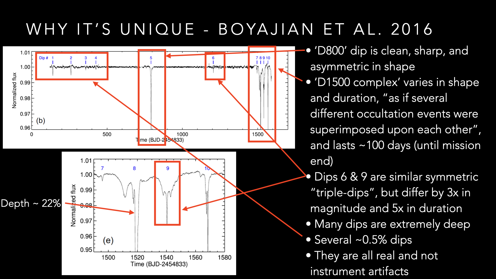
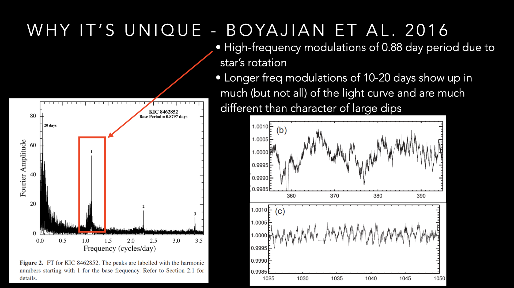
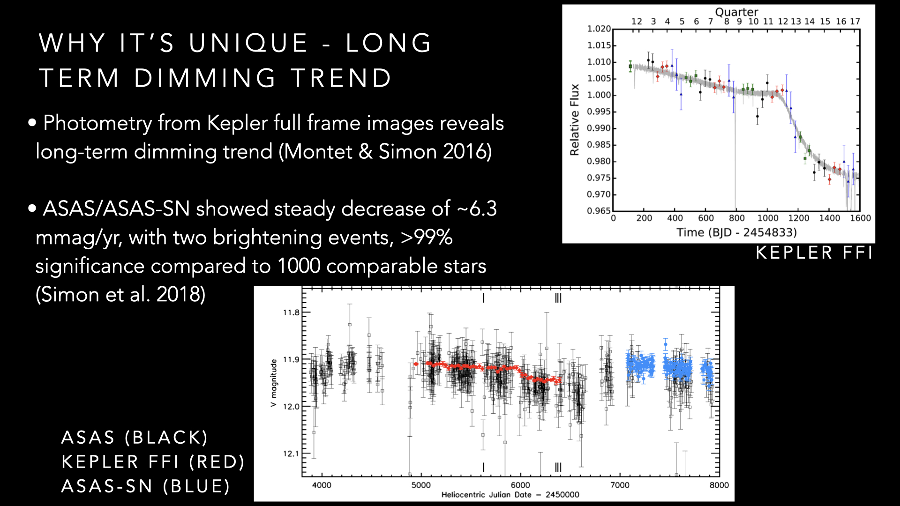
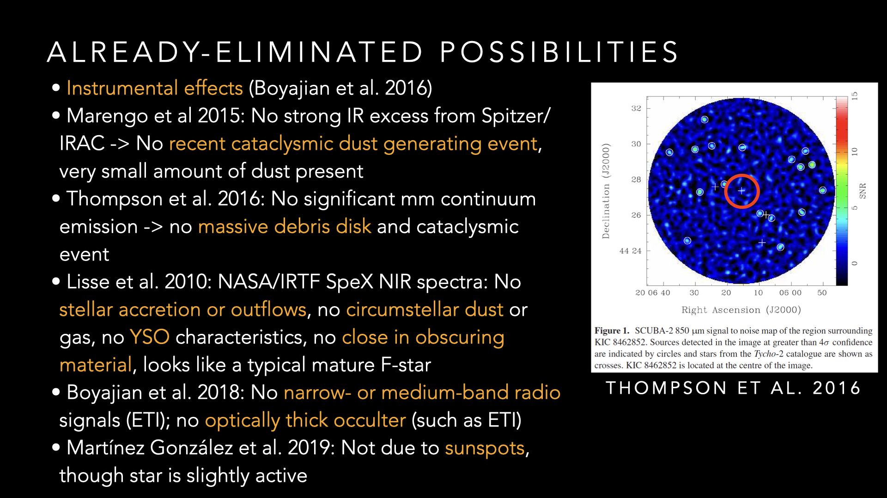
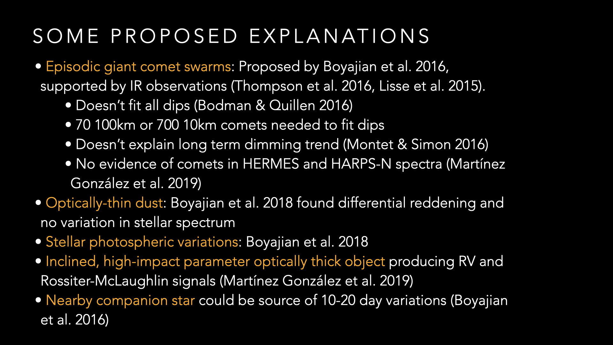
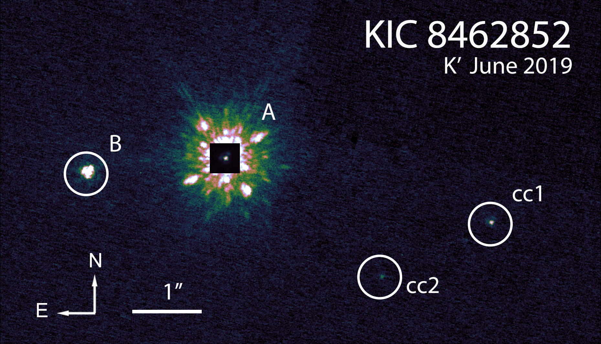
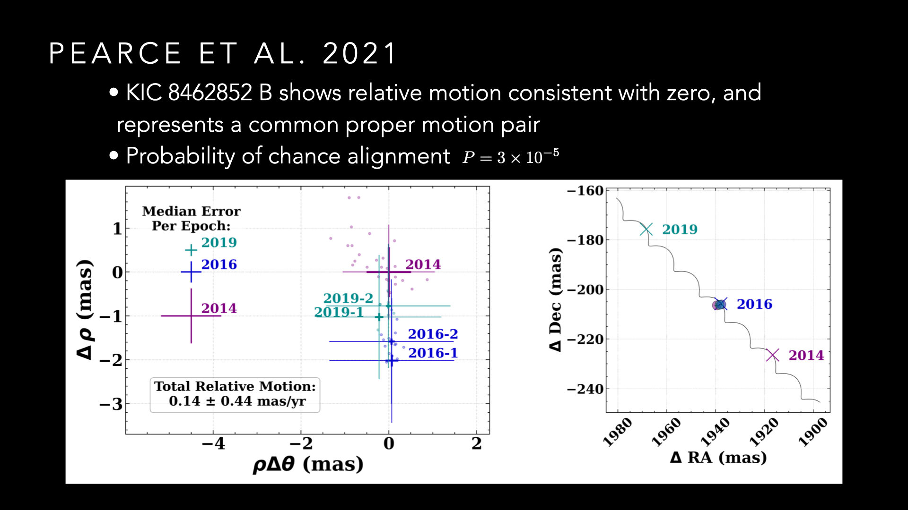

Advisor: Adam Kraus, University of Texas
Boyajian’s Star (aka KIC 8462852, aka Tabby’s Star) has achieved noteriety in the science community due its odd and not-easily-explainable Kepler light curve (first reported in Boyajian et al. 2016, which exhibits dips of varying depths, some extremely deep (~20%), apparently aperiodic, accompanied by a long-term dimming trend. Many ideas have been explored to try to explain the observed light curve (such as Wright & Sigurdsson, Boyajian et al. 2018, Wyatt et al. 2018, and others), but none yet are clear slam dunks. It has also had some noteriety in the popular imagination due to the idea that it might be explained by a Dyson sphere, even though evidence does not support this.
  

Boyajian et al. 2016 also reported a possible stellar companion about 2” to the east of KIC 8462852. In our paper, we use three Keck/NIRC2 with NGS AO observational epochs spanning 5 years to show that this object exhibits common proper motion that is not consistent with chance alignment, and conclude that is a bound wide stellar companion, KIC 8462852 B, with separation of ~880 AU. We also show that two other objects in the frame are unassociated.
 The companion is not likely to be currently affecting the light curve of KIC 8462852, however the wide binary likely influenced the environment around KIC 8462852 A during formation and evolution, which could be a piece of the puzzle of this system.